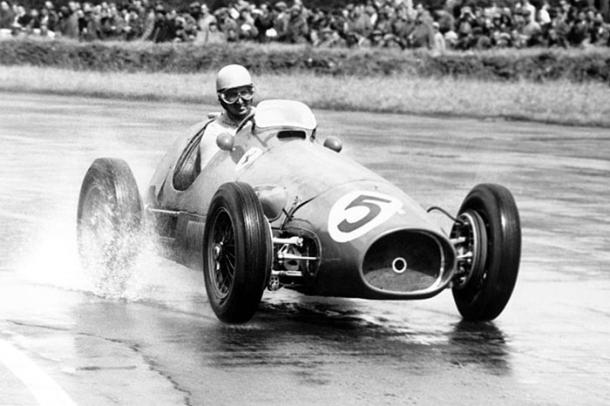
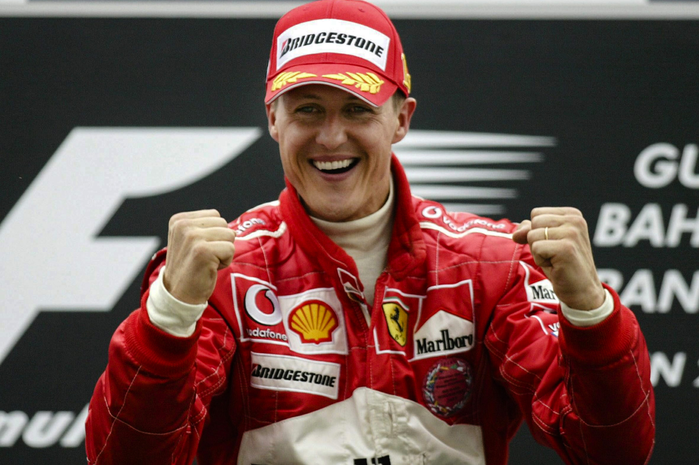
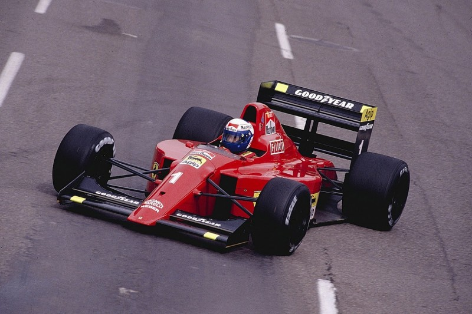
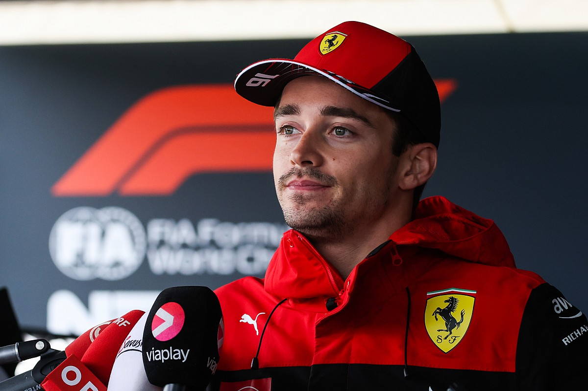

O inicio:
Com a criação da Fórmula 1, em 1950, a marca não ficaria de fora, participando pela primeira vez de uma corrida no GP de Mônaco, a segunda etapa do campeonato, e não faria feio ao obter o segundo lugar com o piloto Alberto Ascari. A primeira temporada não foi brilhante, com cinco corridas e nenhuma vitória, porém não passou batido ao conseguir pelo menos os seus três primeiros pódios — em 2020, a equipe possui a expressiva marca de 770 pódios. Em 1951, veio a primeira vitória e a primeira pole, com José Froilán González, em Silverstone, no GP Britânico. No ano de 1952, veio o primeiro título de piloto, com Alberto Ascari, ao vencer seis das oito corridas da temporada. Em 1953, Ascari conquistaria o bicampeonato, com cinco vitórias em nove corridas.
O auge:
Em 1999, na quarta temporada de Michael Schumacher na equipe italiana, a Ferrari conseguiu subir um degrau, e após passar três anos batendo na trave com o vice-campeonato, a equipe quebraria o jejum de 15 temporadas sem título de construtores, dando um passe além, criando o melhor par da Fórmula 1, envolvendo piloto e equipe, que só seria quebrado em 2019, com Mercedes e Hamilton. De 2000 a 2004 foram 10 títulos (somando construtores e pilotos) para o casamento Ferrari e Schumacher. A escuderia conseguiu 57 vitórias (67%), 51 poles (60%), 42 melhores voltas (49%) e 117 pódios. Hegemonia é o nome disso!
Jejuns significativos:
Após o término de 2022, a Ferrari completou 14 anos sem comemorar um título de equipe. Se for olhar para o título de pilotos, a seca é ainda maior, com 15 temporadas, após aquele título conquistado por Kimi Räikkönen, em 2007. Mas, por incrível que pareça, não é a pior seca da história da Scuderia. A mais longeva foi nos anos 80-90, quando passou de 1984 a 98 sem conquistar título de equipe e de 1980 à 1999 sem título de piloto. A época foi tão complicada, que a escuderia passou três temporadas sem saber o que é uma vitória. Fato vivido entre 1991 a 1993. Dentro desta época veio a pior classificação geral, com um décimo lugar, em 1980. Tudo isso começou a mudar em 1999, quando o casamento Ferrari e Michael Schumacher se consolidou.
O momento atual:
A Ferrari vive um momento delicado na formula 1, ao final de 2023 a equipe vai completar 15 anos sem um titulo mundial de pilotos fazendo com que essa seja sua pior marca da história. Apesar de ter uma dupla de pilotos talentosos, a equipe não consegue ter boas estratregias para os GPs e comete erro atrás de erro. Apesar disso Charles Leclerc ainda é tido como um piloto talentoso e um possivel futuro campeão mundial pela equipe, seu companheiro Carlos Sainz é tido como um bom piloto mas não tão bom quanto Charles. O problema maior talvez seja sua a equipe Red Bull Racing, que tem um carro muito acima dos demais carros do grid, incluindo a Ferrari. Apesar de estar vivendo seu maior jejum de titulos, a Ferrari pode não ganhar um titulo tao cedo...
